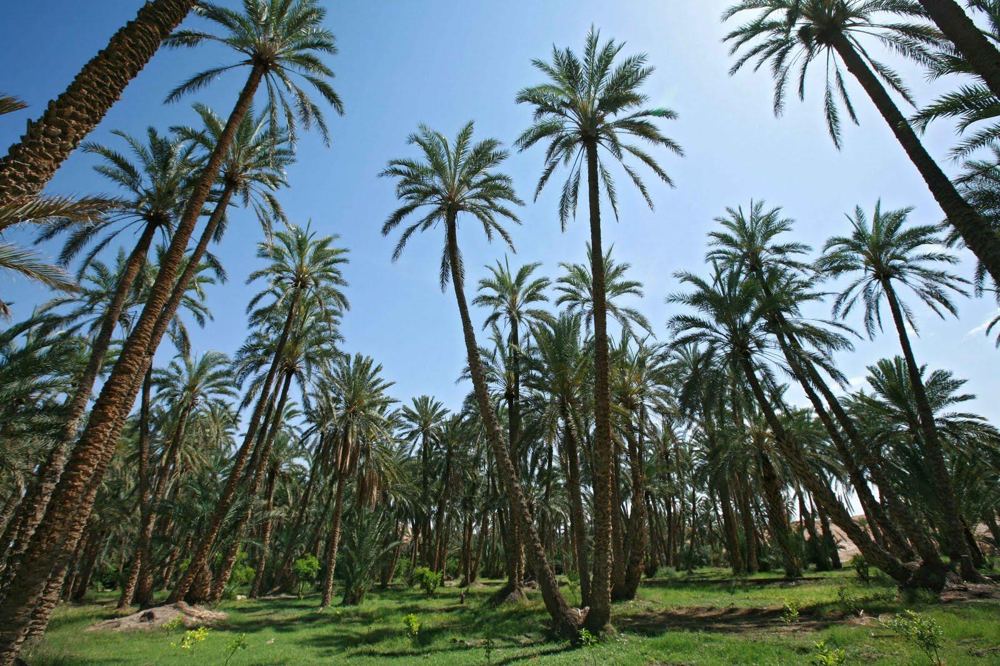
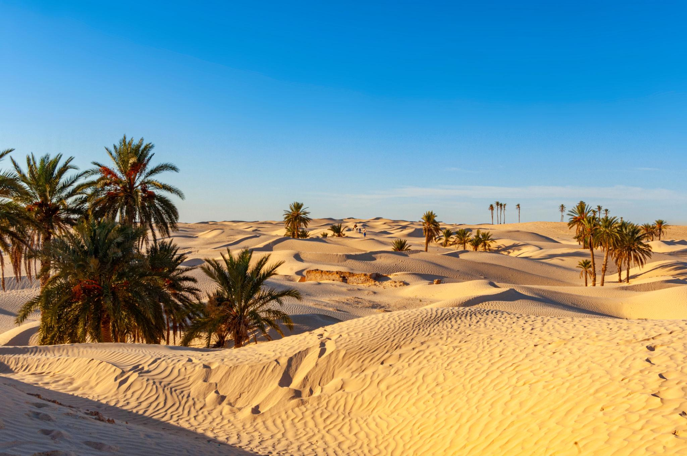

Kébili est une ville située dans le sud-ouest de la Tunisie, au cœur du désert du Sahara. Elle est connue pour ses magnifiques oasis, ses vastes palmeraies et sa production de dattes de haute qualité,
notamment la célèbre variété Deglet Nour.
Grâce à son climat désertique, ses paysages de dunes de sable et ses traditions ancestrales, Kébili représente une destination idéale pour découvrir la beauté du Sahara tunisien. La région offre également des expériences uniques, comme les promenades dans le désert, la découverte de la vie traditionnelle et les excursions vers les oasis.
Kébili est ainsi un lieu où la nature, la culture et l'histoire se rencontrent pour offrir aux visiteurs une expérience inoubliable.
Les fameux Destinations
Les oasis de Kébili
Les oasis de Kébili, situées dans le sud de la Tunisie, sont des lieux magnifiques connus pour leurs vastes palmeraies et leurs célèbres dattes, notamment la Deglet Nour.
Au milieu du paysage désertique du Sahara, elles offrent un cadre naturel paisible où les palmiers, la verdure et les traditions agricoles se rencontrent.
Ces oasis jouent un rôle essentiel dans la vie des habitants et témoignent de leur savoir-faire ancestral en matière d'agriculture et de gestion de l'eau.
Elles constituent une destination idéale pour les visiteurs qui souhaitent découvrir la beauté naturelle, la richesse culturelle et l'authenticité du sud tunisien.

Zaafrane
Zaafrane est un petit village situé près de Douz, dans le gouvernorat de Kébili, au sud de la Tunisie.Il est connu pour ses magnifiques paysages sahariens, ses dunes de sable doré et son atmosphère paisible.
Entouré par l'immensité du désert, Zaafrane offre aux visiteurs une expérience authentique au cœur du Sahara tunisien.
Les voyageurs peuvent profiter de promenades à dos de chameau, découvrir les traditions locales et admirer de superbes couchers de soleil sur les dunes. Grâce à sa beauté naturelle et à son patrimoine saharien,
Zaafrane est une destination idéale pour les amateurs de désert, de nature et d'aventure.

Chott el-Jérid
Le Chott el-Jérid est un immense lac salé situé dans le sud-ouest de la Tunisie, entre les régions de Kébili et de Tozeur.
Il est célèbre pour ses paysages spectaculaires, ses étendues de sel blanc et ses couleurs changeantes qui varient selon la lumière du soleil.
Pendant les périodes chaudes, l'évaporation de l'eau crée parfois des mirages fascinants qui donnent l'impression de voir des lacs au milieu du désert.
Traversé par une route offrant des panoramas exceptionnels, le Chott el-Jérid est une destination incontournable pour les amateurs de nature et de photographie.
Ce lieu unique représente la beauté sauvage du Sahara tunisien et offre aux visiteurs une expérience inoubliable.